crossing voids
都内のターミナル駅至近に位置する、多世代交流のための公民館プロジェクト。
駅からの人流を迎え入れる都市のゲートとして、ハの字に開いたエキスパンドメタルのファサードを構えました。
内部には、子育て世代から青少年、シニアまでが利用する複合的なプログラムを内包しており、下階から上階へとズレながら連なるボイド（吹き抜け）が、各領域を視覚的かつ立体的に結びつけます。
多様なアクティビティが空間のなかで交差することで、世代を超えた刺激と新たな出会いを創出する建築を目指しました。
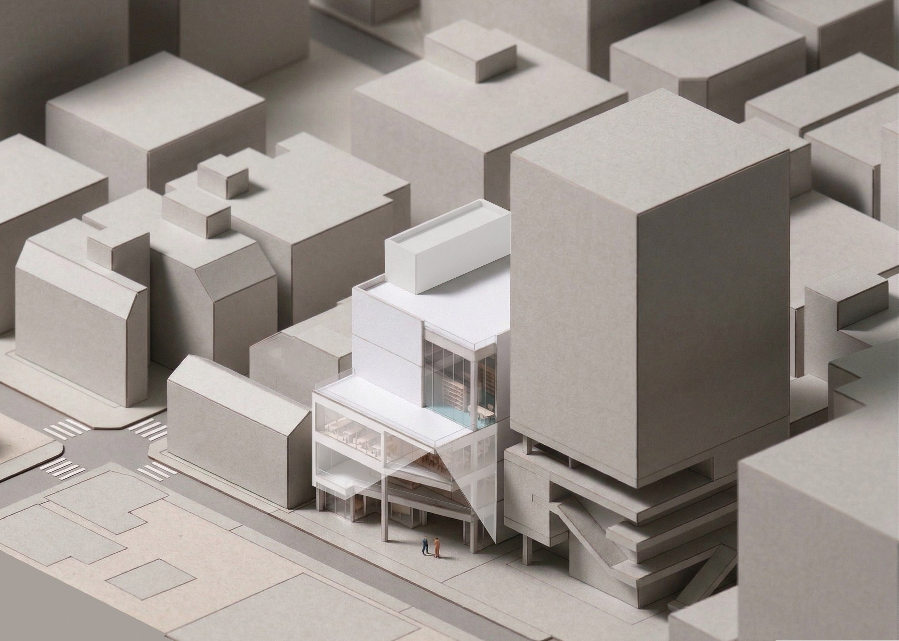
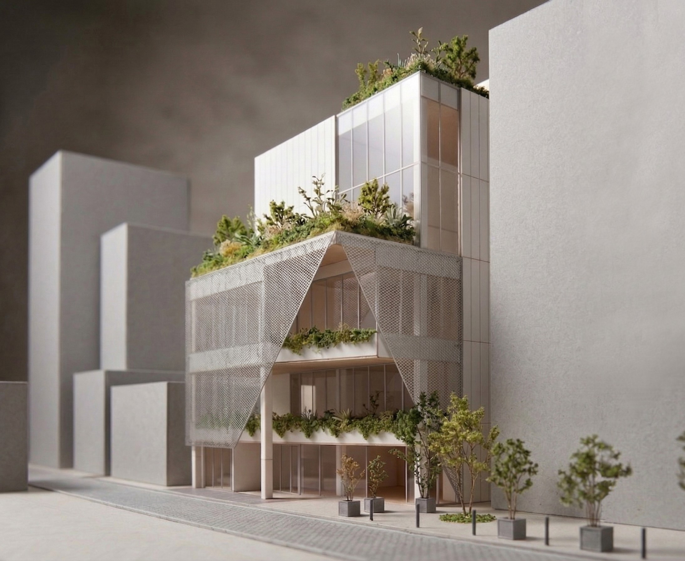
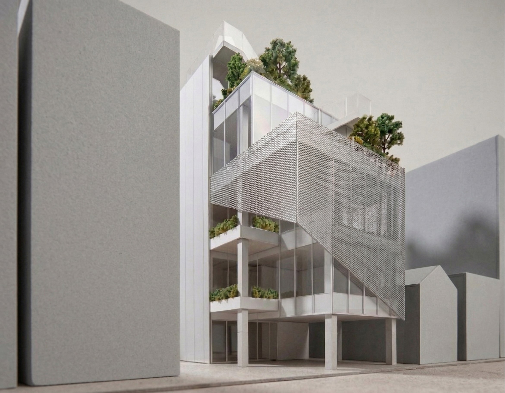
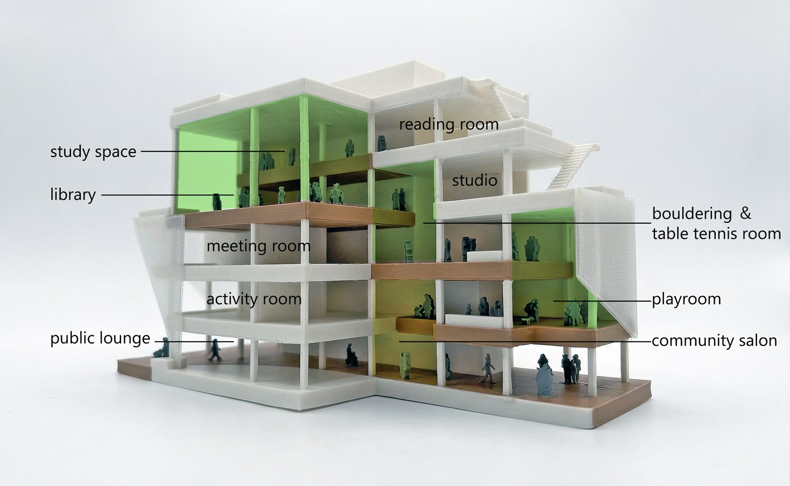
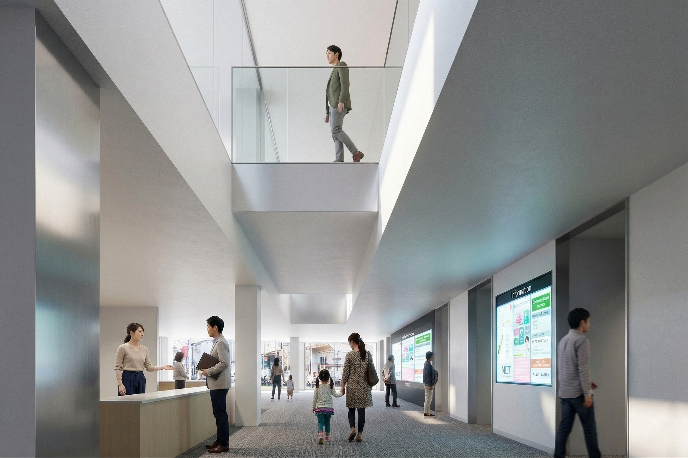
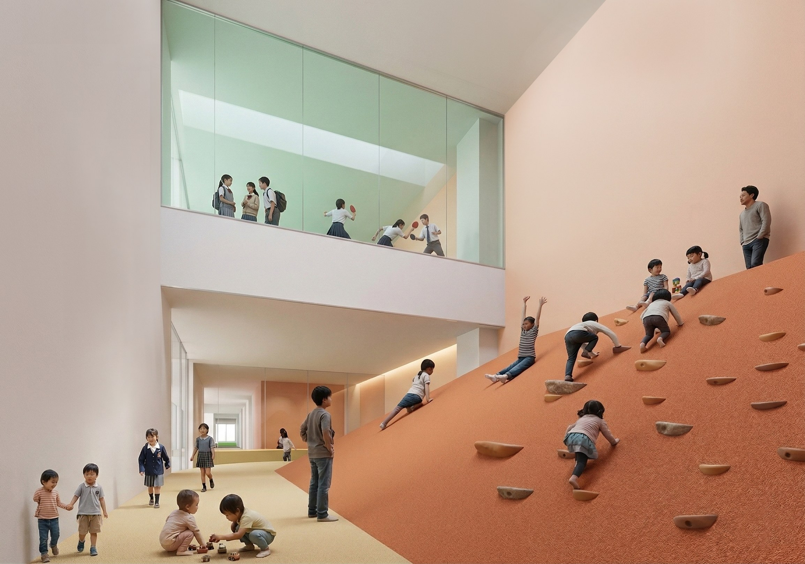
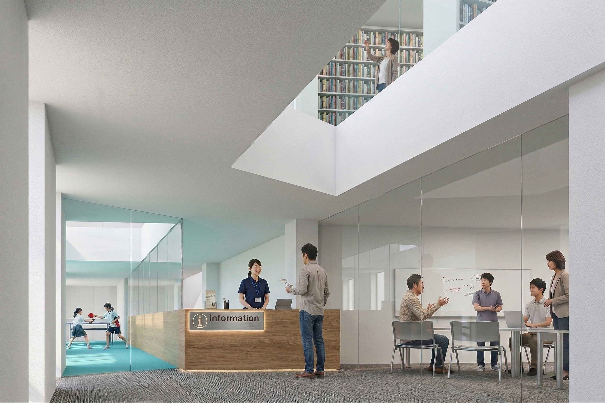
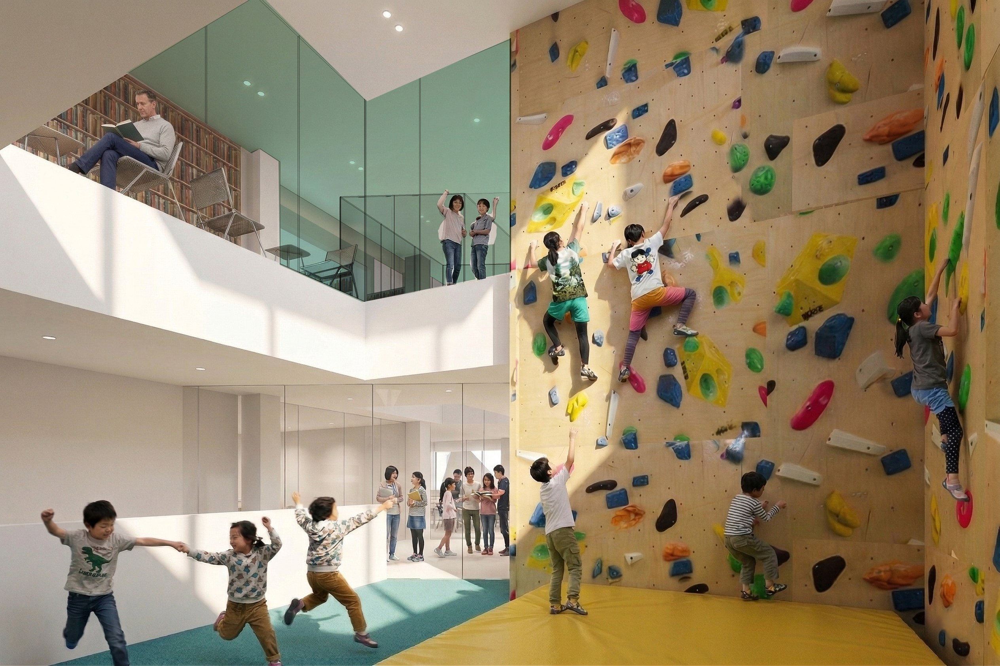
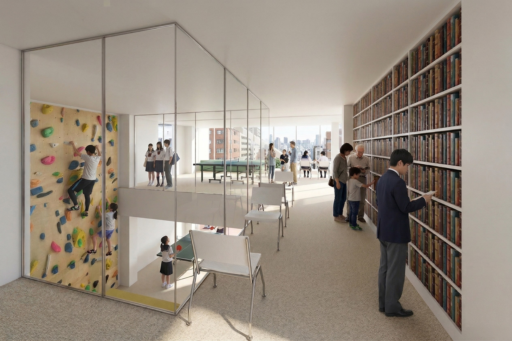
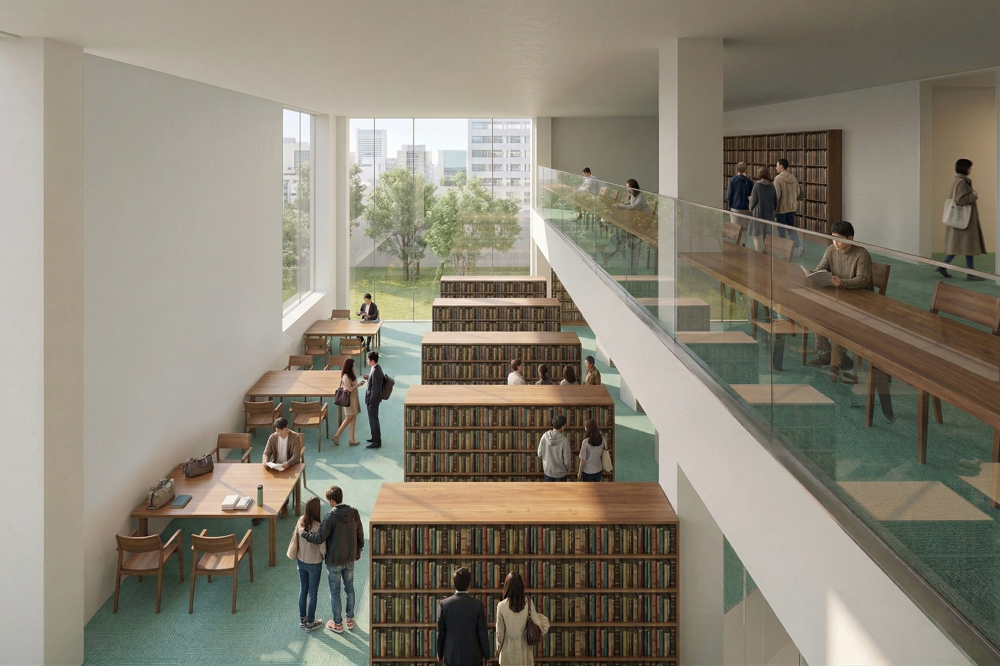
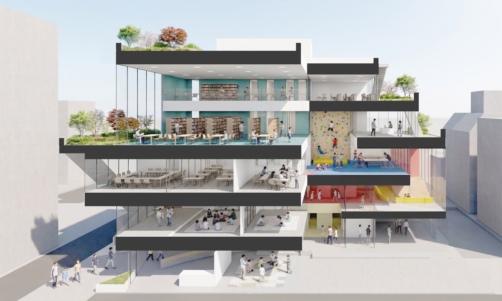